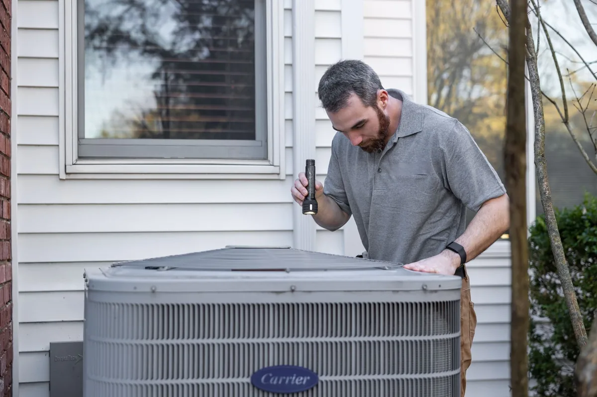
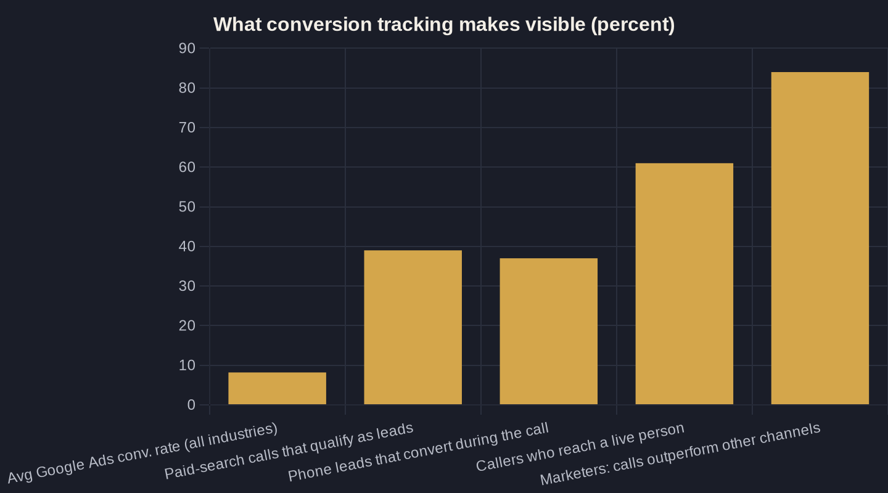

Conversion and Call Tracking for Google Ads (Stop Flying Blind)
If you can't say what a booked job costs you, you're not running Google Ads — you're funding it. Conversion tracking is how you take back the steering wheel.

Key takeaways
- Without conversion tracking you can't tell if your account beats the 8.18% Google Ads benchmark or trails it — you're guessing, not managing.
- For local service businesses, phone calls are the biggest pool of trackable conversions: 37% convert on the call and phone leads close 10-15x more often than web leads. Track them as primary conversions.
- Smart Bidding (Maximize Conversions, Target CPA, Target ROAS) is only as good as the conversions you feed it — Google requires conversion tracking enabled for it to work at all.
- Watch for double-counting: two tags on one thank-you page halves your apparent cost per acquisition and makes the algorithm overbid. One conversion, counted once.
- Reconcile Google's conversion count against your booking system monthly — tracked conversions only matter if they tie back to real revenue.
Google Ads Conversion Tracking: What You're Actually Buying
Most local service owners can tell you what they spent on Google Ads last month. Far fewer can tell you how many booked jobs it produced, or what each one cost. That gap is exactly what Google Ads conversion tracking closes — it ties the dollar you spend to the phone call, form fill, or booking it actually generated.
The stakes are higher than they look. The average conversion rate for Google Ads in 2026 is 8.18% across industries, measured over 13,474 US search campaigns, and rates swing widely by trade. Without your own tracking, you literally cannot tell whether your account is beating that benchmark or quietly trailing it.
This piece is one spoke in the larger Google Ads playbook for local service businesses. Tracking is the part that makes every other decision in that playbook measurable — the difference between an opinion and a number.
What Actually Counts as a Conversion
A conversion is any action worth money to you: a booked appointment, a quote request, a form submission, or — the one most owners undercount — a phone call. The trap is treating low-value actions as the goal. Counting a page view or a generic button click as your primary conversion teaches the account to chase clicks, not customers.
Define your conversions the way you'd define a good lead at the front desk. For a plumber or a clinic, that's a call that books work or a form that turns into an appointment — not a newsletter signup or a map-directions tap. Everything else can be a secondary conversion: useful to watch, but never the thing your bidding optimizes toward.
Getting this right also depends on the traffic you let in, which is its own discipline covered in choosing and blocking the right local keywords. Clean conversions and clean keywords are two halves of the same machine — corrupt either one and the whole account lies to you.
Calls Are the Conversion Most Owners Miss
For local service businesses, the phone is still where the money is made. Analyzing more than 60 million phone calls, Invoca found that 37% of phone leads convert during the call and 61% of callers reach a live person — meaning the sale often happens on the line, completely invisible to you unless calls are tracked as conversions.
The volume sits on the search side. By channel, calls from Google Ads paid search qualify as leads 39% of the time, and Google Ads still drives the highest overall volume of calls among paid channels — so for most local advertisers, the biggest pool of trackable conversions is phone calls from search.
And those calls carry more weight per lead. Phone leads convert to revenue 10 to 15 times more often than web leads, with 84% of marketers reporting calls produce higher conversion rates and larger order values. Treat a tracked call as a primary conversion, not an afterthought — and note that call attribution works differently in Local Services Ads versus standard Google Ads, which is worth understanding before you commit a budget.
Without Tracking, Smart Bidding Is Driving Blind
If you use Maximize Conversions, Target CPA, or Target ROAS (ROAS = return on ad spend), tracking isn't optional — it's the fuel. Google's own documentation is blunt: to use Smart Bidding you need conversion tracking enabled. Automated bidding optimizes toward the conversions you feed it. No tracking, no signal, no optimization.
This is why two accounts with identical budgets can produce wildly different results. The one feeding clean conversion data teaches Google's algorithm what a good customer looks like and bids up for more of them; the other is just buying clicks at whatever price the auction sets. The machine is only as smart as the data you hand it.
Your budget decisions — covered in the local budget guide — only pay off when the bidding has real conversions to aim at. Raising spend on an account with broken tracking just buys more of the wrong thing, faster.
| Metric | Figure | What it means for your account |
|---|---|---|
| Phone leads that convert during the call | 37% | The sale often happens live — invisible unless calls are tracked (Invoca, 60M+ calls) |
| Callers who reach a live person | 61% | Most calls connect to a human, not voicemail — high-intent and trackable |
| Google Ads paid-search calls that qualify as leads | 39% | Lower than display (54%) but the highest call volume of any paid channel |
| Phone leads vs. web leads (revenue conversion) | 10-15x | Phone leads close far more often (BIA/Kelsey) |
| Marketers reporting calls beat other channels | 84% | Higher conversion rates and larger average order value (Forrester) |

The Mistakes That Quietly Corrupt Your Data
Turning tracking on is not the same as turning it on correctly. Common mistakes quietly corrupt Google Ads data: making a low-value action the primary conversion, double-counting when both a native Google tag and a GA4-imported goal fire on the same thank-you page, and signal loss from Safari privacy features, iOS, and ad blockers.
Double-counting is the sneakiest because it makes the account look like it's winning. When two tags fire on one confirmation page, your apparent cost per acquisition is cut in half and Smart Bidding overbids on the inflated count. If your cost per conversion suddenly drops with no other change, suspect a duplicate tag before you celebrate.
Reliable Google Ads conversion tracking means one conversion, counted once, valued at what it's worth. The table below shows why the phone call — done right — deserves to be the conversion you protect most.
How to Set Up Google Ads Conversion Tracking Right
Here's the Owner's Math version — the sequence that makes the data trustworthy instead of decorative:
- Pick primary conversions that equal revenue — booked calls and qualified form fills. Mark everything else (page views, button clicks, directions) as secondary so it informs but never drives bidding.
- Install call tracking with a unique tracking number so every call is attributed and counted as a conversion, not guessed at from a generic line.
- Audit for double-counting — confirm only one tag fires per thank-you page, and don't import a GA4 goal that duplicates a native Google Ads tag.
- Assign conversion values so Target ROAS has something real to optimize toward instead of treating every lead as equal.
- Reconcile monthly against your booking system — does Google's conversion count match the jobs you actually booked?
That last step is the one most agencies skip. Tracked conversions only matter if they reconcile to revenue — the core idea behind Owner's Math, which traces every dollar of spend to a booked job and back out to ROAS.
What Good Looks Like — and Where to Start
When conversion tracking is set up deliberately, the account stops being a mystery. You can say what a booked job costs, which keywords and ad groups produce real customers versus busywork, and whether last month's spend beat the 8.18% benchmark or fell short of it. The instrument panel finally matches the road.
That clarity compounds. Clean data makes Smart Bidding work, makes budget changes safe, and makes the next month's plan a decision instead of a guess. The candor is the product — you can only fix what you can honestly see.
If you're running Google Ads and you can't say what a booked job costs you, that's the place to start. Book a call and we'll walk your account's conversion setup line by line, or join the newsletter for the plain-English Owner's Math breakdowns we send owners every week.
Sources
- WordStream by LocaliQ — Google Ads Benchmarks 2026 (2026)
- Invoca — 5 Insights From 60 Million Phone Conversations (2025)
- Invoca — Cross-Channel and Cross-Industry Buyer Conversion Benchmark Report (PR Newswire) (2025)
- Google Ads Help — About Smart Bidding (2026)
- Invoca — Digital Marketing Statistics You Need to Know (citing BIA/Kelsey and Forrester) (2025)
- Measure Marketing Pro — How Conversion Tracking Affects Smart Bidding in Google Ads (2026)
Want this run on your numbers?
Book a call and we will run the Owner's Math on your business — clear numbers, a straight plan, no pitch. Or read the free Playbook first.